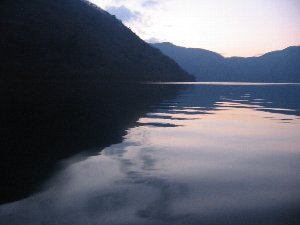
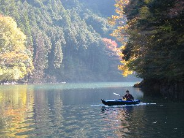

本栖湖＆笹間ダムカヌー | ２００４年１１月 |
|---|---|
| 本栖湖＆笹間ダムカヌー 友人と本栖湖でカヌーをしました。艇は二人乗りのフォールディング（組立）カヌー。モンベルのボイジャー450です。 良く晴れた日曜日、途中寄り道しながら行くと大分遅い時間になってしまいました。と言っても午後1時。今日はここでキャンプするつもりなので、まだまだ時間はあります。昼食のパスタを茹で、テントを設営。なんと3時！ 山に囲まれた本栖湖では、既に太陽が山に隠れようとしています。 急いでカヌーの組立に入ったものの、久しぶりの組立で時間が掛かりました。結局進水したのが4時前。11月後半ともなると、空も夕焼け直前模様になってきます。釣り人の邪魔にならないように草むらの間からエントリー。 あまり遠くまで漕いで、真っ暗になってしまうのも怖かったので、近場をぐるぐると。 風も吹いてなく湖面は静かで、空の夕闇が写り込み、カヌーとパドルの軌跡だけが残ります。昼間とは違う景色が神秘的です。 | |
 夕闇迫る本栖湖 富士山と月が素晴らしい |  夕闇の中の本栖湖 湖面に艇の軌跡だけが残ります |
| 色が神秘的です。 湖面が見にくくなってきた頃に、本日は終了。キャンプ場に戻ると既に真っ暗です。 本日の夕食は鍋。途中の道の駅で購入したキノコや豆腐を入れてポン酢で頂きます。ビールで本日の無事を祝って（祝うほどやってないが）乾杯！ あ〜寒いけど美味しい〜 友人差し入れの日本酒も頂く。甘口なのだが、べったりとした甘口ではなく、すっきりとした白ワインのような甘口。これが日本酒かと思うくらい美味しい！日本酒は冷の辛口が好みなのだが、これは別ジャンルとしていける！ つぅーか、ワイン？ 酒豪には物足りないも知れないが、女性には受けるね。 酒も無くなり、焚き火が下火になってきた11時に就寝。 翌日 空に雲ひとつ無く気持ちの良い秋晴れの月曜。今日は有給を取っているので、余計に気持ちが良い！ みんなっ！働いてますかー！ と、心の中で叫びながら（実際に口に出ていたような気もするが）カヌーで再び本栖湖へ。 今日は風が吹いていて、湖面に白波が若干たっています。が、対岸まで良く見えるので横断しよう！本栖湖を横切るように対岸向かって突き進みます。風や波にあおられながら横断しました。対岸から見ると、湖の向こう側に雪を頂いた富士山が見えます。帰りはその富士山目指して漕ぎます。 本日は大井川の奥地、寸又峡に宿を取っているので、名残惜しいが本栖湖と別れ、一路大井川へ。 | |
 二人のところを一人で乗っているため前が浮いてる |  笹間ダム湖 山が写り込んでいるの分かります？ |
| 翌日、寸又峡を散策した後、本日のカヌー地の笹間ダムへ。休日の為、観光客が多く、対抗斜線は渋滞気味です。途中のコンビニでお昼を購入。 笹間ダムの駐車場に着くと、高齢のおじさんが（言い方おかしいが、微妙なニュアンスを感じ取って！）カヌーを引き上げるところでした。なんと、そのカヌーは手作りだと言うではありませんか！ カナディアンカヌーだが、とても手作りとは思えない綺麗な出来栄えです。いや、売れるでしょう！パドルも手作り！ おじさんは木工職人をしていると言うが、いやいや、それでもスゴイです！ 漕ぎ出した笹間ダムは、波も立って無く鏡のような湖面に、周囲の山々を写し込んでいました。この辺りは船でしか来ることが出来ないので（無理すれば来れるが）、この景色はカヌーイストだけの景色だよね。あー、気持が良い〜 持ち込んだ昼食を船上で頂く。私は蕎麦。ひっくり返らないようにゆっくりとした動作で、ズルズルとたぐります。これも変に気持ちいい〜♪ やっぱ、笹間ダム湖は良いね。帰りがけに練馬から来られたカナディアンカヌーのご夫婦と会いました。ココは初めてとの事でしたが、そのパドルさばきは上手です。わざわざ来られたのか分かりませんが、結構人気高いですね〜 | |
 笹間ダム湖 |  同じく笹間ダム湖 |
| 写真＆コメント ｂｙ べっしー | |